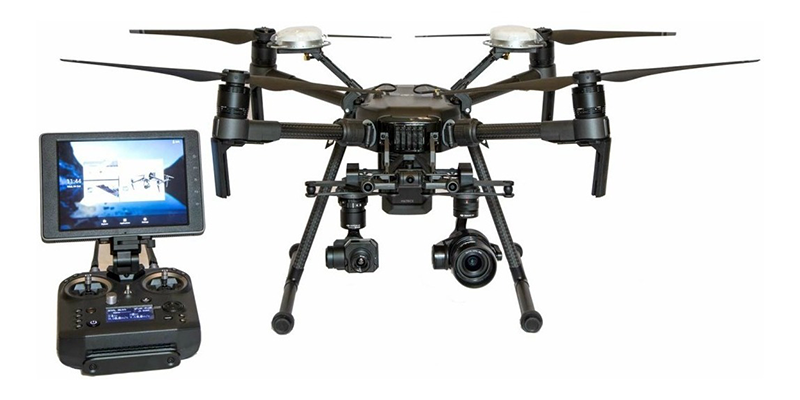

Matrice 200 Pro
Thermal Inspection Solution
Ruggedized aerial platform to oversee sites and identify electrical or water damage throughout project life cycles, so you can effectively direct your maintenance resources.
Easy-to-use comprehensive solution with RTK-enabled drone and intelligent GNSS base station delivers reliable centimeter-level accuracy without the need for ground control points.
High-performance motors paired with 17-inch propellers ensure stable flight in strong winds. The new dual-battery power system automatically heats batteries when flying in sub-zero temperatures, while an enclosed design ensures weather and water resistance, so you can fly in a wide range of environments.
Conduct Safe and Efficient Inspections
The DJI Zenmuse XT camera offers many advantages for rooftop solar panel inspectors and operators of massive solar farms. In addition to being able to clearly view temperature anomalies on a crisp thermal image, the Zenmuse XT can be used to scan installed solar panels during normal operation across large areas within a short time frame. This allows problem panels to be isolated quickly, ready for remedial action, keeping energy production at optimum levels. Attached to a DJI M100, the XT will have a flight time of over 30 minutes, allowing for the inspection of large sites in a single flight. DJI’s Inspire series when combined with either its Zenmuse X3 or X5 cameras provide solar energy plants the ability to inspect an array of panels at speed. Instead of sending inspectors out into the plant to check individual panels on foot, a flight overhead recorded using 4K video provides the image clarity needed to carry out initial inspections. Inspectors then are only required to investigate problem areas, significantly increasing their efficiency and productivity.
Add to Cart